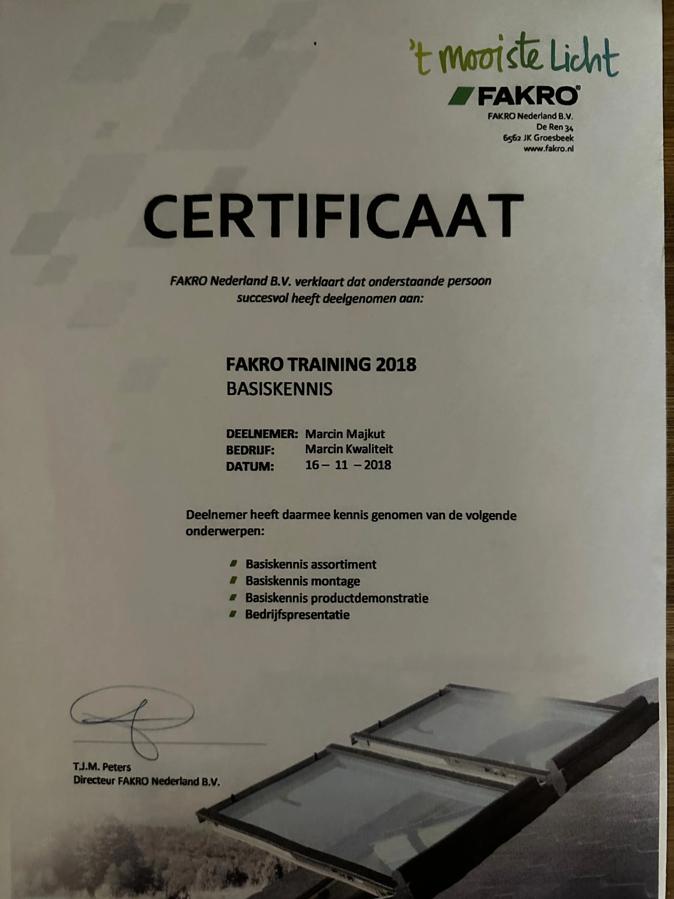

Welkom
Welkom bij Marcin Kwaliteit! Ik ben uw specialist voor dakramen en lichtkoepel montage, vervanging en reparatie. Neem direct contact op voor een vrijblijvende offerte.


Welkom bij Marcin Kwaliteit! Ik ben uw specialist voor dakramen en lichtkoepel montage, vervanging en reparatie. Neem direct contact op voor een vrijblijvende offerte.